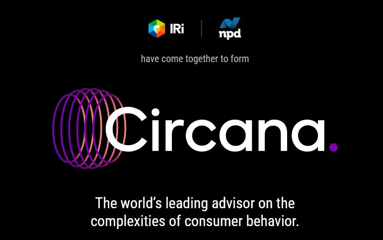
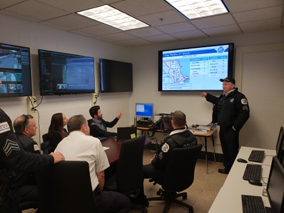
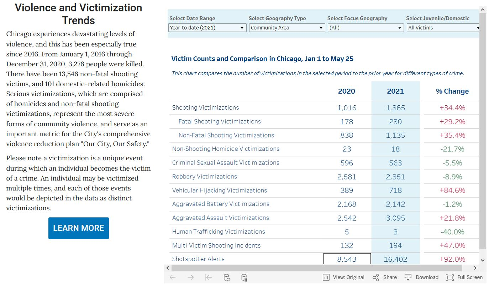
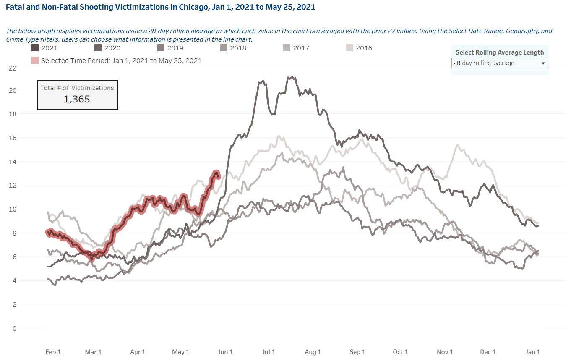
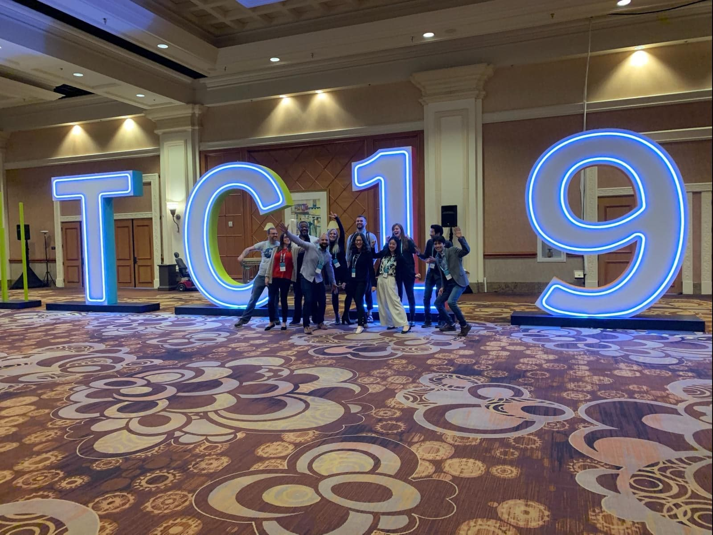
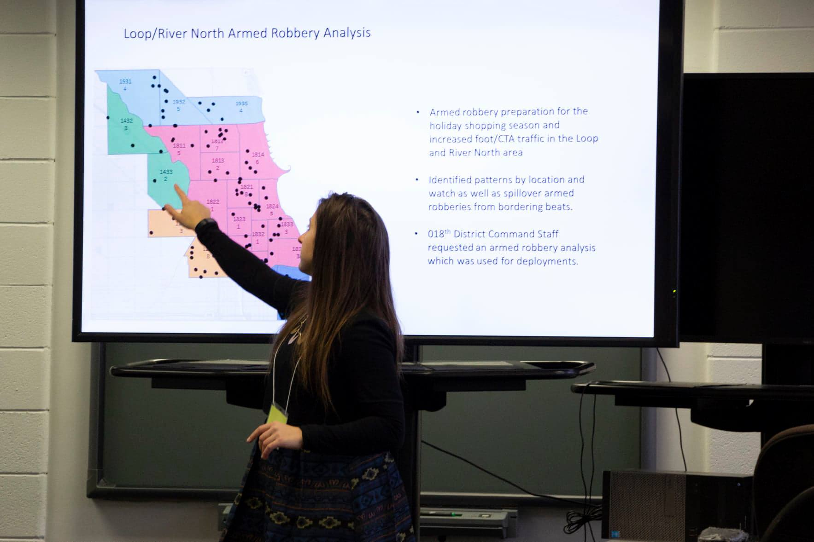

我过去工作和项目的简要概览。
在我目前担任数据科学高级经理 II 的职位中，我负责监管多个定价分析产品（如需了解这些工具的更多功能，请点击此处）。在此职位上，我带领一支由顾问、经理和分析师组成的团队，生成可推动战略决策的可执行洞察。我负责测试产品、ETL 流程和新功能，并确保质量控制和调试以实现最佳性能。此外，我还管理所有与分析相关的交付成果，包括分析报告、研究报告、培训材料以及高管层面的演示和问答环节。

我在市场研究咨询方面的专长涵盖多个业务领域，包括科技、消费品、零售、媒体和综合商品。我专注于通过定量方法（如大数据分析、预测建模和预测）以及定性方法（包括调查、焦点小组和消费者行为分析）生成洞察。
为提高报告效率，我主导将现有 Excel 报告自动化为 Power BI 仪表板，制定了标准化操作程序，并创建了包括视频和文档在内的培训材料。
此外，我还管理用于确定 OPP 向小型市政当局和乡镇提供合同服务成本的财务和人员统计模型，该模型包含多种因素和关键变量。
我还监管部门 50% 的采购运营，与供应商（包括 SAS）合作，确定最佳产品方案、起草业务案例并管理合同。
在芝加哥大学期间，我主要从事 SDSC 项目——这是芝加哥警察局行动局内的一项协作智能警务计划。最初，我为芝加哥警察局三个分区进行犯罪和资源分析，向分区指挥官提供数据驱动的洞察和战略建议。我还以多种身份为全市多个分区做出贡献。
随后，我担任南区副局长的分析师，同时也担任南区侦探的 ATC（区域技术中心）分析师。ATC 本质上是侦探局的 SDSC 对应机构，使用截然不同的工具、设备和程序运作。
在犯罪分析工作结束后，我转到芝加哥警察局总部，参与了专注于交通、人员管理和同意令合规的项目。

我在芝加哥市长办公室工作的一个关键部分是领导区域协调会议的南区数据工作。该倡议汇聚了多个机构和组织的多元联盟——包括芝加哥大学犯罪实验室（我作为代表参与）、芝加哥大学医学中心、芝加哥警察局、芝加哥市长办公室、芝加哥街道和卫生局、芝加哥公园区、库克县检察官办公室、Chicago CRED 以及众多其他公共机构和非营利组织——共同应对暴力犯罪及相关问题。
作为这些双周例会的一部分，另一位分析师和我手动汇编了犯罪统计报告，追踪致命枪击、非致命枪击和非枪击凶杀案件。意识到需要更高效、更便捷的方法，我们开发了 VR 仪表板，这是芝加哥市有史以来第一个公共数据仪表板。经过六个月的开发，仪表板在市政网站上正式上线，为利益相关者和公众提供实时犯罪分析。
除共同开发仪表板外，我还负责制作每月更新和故障排除简报、设计封面页和底图，以及为公共机构、外展组织和其他关键利益相关者领导培训课程和演示。


截至 2021 年 5 月 27 日，VR 仪表板正式向公众开放：
我有机会参与同意令下的多个项目，同意令是美国司法部发布的用于改革执法机构的联邦授权。在 2017 年芝加哥实施之前，同意令已在全国多个警察局执行，包括洛杉矶警察局、西雅图警察局和新奥尔良警察局。
我的工作重点是加强社区与警察关系、提升资源和巡逻效率，以及分析人员数据（尤其是缺勤和休假趋势）以支持知情的政策决策等关键领域。
我还参加了多个执法和分析领域的会议，包括 Tableau 大会（2019年）、国际警察局长协会大会（2019年）、2018年打击犯罪者大会以及美国犯罪学学会年会（2015年）。

如果您对 Tableau 活动和会议感兴趣，请点击此处 [Tableau 活动]
在 2018 年打击犯罪者大会上，我和我的团队使用 Tableau 仪表板展示了创新的数据可视化，并介绍了智能警务的新方法。我们的演示面向代表超过 25 个执法机构的观众，以及由芝加哥警察局前技术服务主任和洛杉矶警察局前侦探副局长组成的评审团。
